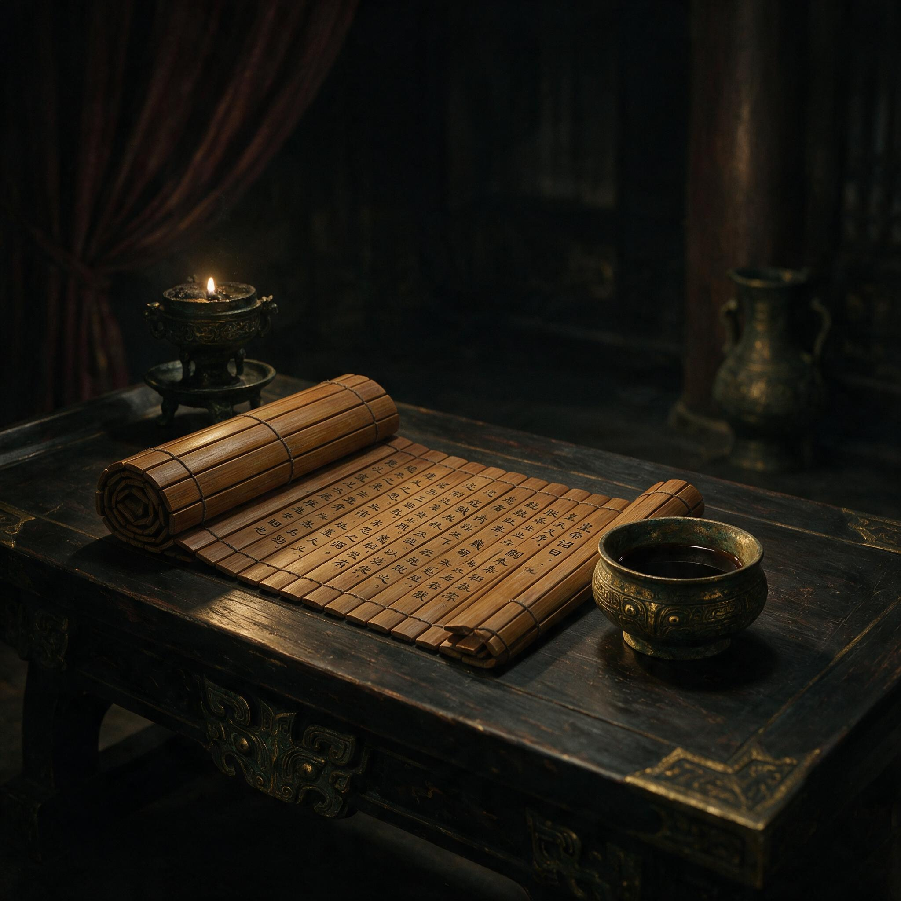

第 24 章
毒入喉时
灶台上的纸先于诏书存在。诏书是竹简，重，硬，由中黄门捧来，一路压着暮色，卸在正堂案上时，把那几卷旧公文都震得跳了一下。灶台上的纸不过半掌宽，边缘裁切时偏了一分，上面是尚方署上月物料的几行清点，墨色还没吃透，笔画边缘浮着极细的纤维，像一层薄薄的毛边。陶碗盛了半碗凉水，晚上风从庖厨的北窗进来，碗口的水面微微地颤，纸角就在碗底与灶台之间一仰一伏。他知道风从哪里来，知道夜里有几阵风，知道天亮之前风会停。这座宅子他太熟了，熟到每一扇门在什么时辰发出什么样的响动，都像自己骨节的活动一样清楚。
诏书那四个字还在案上。“自行诣廷尉。”四字是尚书台的手笔，用的是小篆，笔锋收得极干净，每个字都像一片封了口的长条木牍，没有情绪，也不留余地。
他知道这四个字的全部含义。不是逮捕，不是收监，不是交有司议罪。是让他自己走到廷尉府去，让程序从他双脚迈进门槛那一刻重新启动，而出口早就定好了。他五十余年前从耒阳入宫时年仅十二岁，被阉割后在宫中学会的第一件事，就是读懂诏书里没有写出来的部分。
没有写出来的部分是：皇帝不愿在洛阳的大街上看见一个曾经封侯的中常侍被押解过市，不愿在廷尉堂上听见一个知道章帝旧事的宦官开口说话，不愿让士大夫抓住把柄，把后宫旧案翻成新朝的朝议。皇帝要的是他消失，而且消失得干净，像一块石头沉进洛水，水面连个漩涡都不必有。
他从袖中取出那张纸。在指间展开时，纸声轻得像干透的绢，不似简那么响。他借着庖厨里最后一盏油灯的光看那些数字：麻皮三百斤，旧布二百斤，石灰若干，楮皮一百五十斤。字是行草，写得急，因为那天他原要赶在少府查验之前把纸坊存料再核一遍。这些数字背后是一套他不知道写过多少遍的配方：麻皮要浸，要煮，要加石灰水，要和旧布混在一起舂捣，捣到纤维散开，再抄捞、压榨、晾干。纸的骨头就在那混舂里，在铁砧与石臼之间。
他父亲捶打铁坯时说的那句话忽然又回到耳边——缩什么，铁不打不成器。那年他七岁，手指被火星烫出一道细疤。
他后来在石臼房里看工匠舂捣麻皮，总听见铁锤与铁砧的声音，一下一下，从耒阳的官营铁坊一路敲进洛阳的尚方工坊，从皮肤传到骨头，从骨头传进纸的肌理里。他把那张纸叠好，没有塞回袖中，而是压在陶碗下面。纸角翘起，像一只很小的手在风里招了招。
正堂的案上已经摆了三样东西。左边是纸。尚方纸坊近年所造，纸质温细，颜色微黄，吸墨不洇。元兴元年他把这样一叠纸呈到和帝面前，皇帝用指腹摩挲纸面，说了一句“此物轻便，可代简帛”。这句话后来写入少府文书，由郡县抄送，成了“蔡侯纸”这名号最早的官方注脚。
他没有把这件事看作个人的荣耀。纸是在尚方署造出来的，工匠是朝廷的，物料是朝廷的，工坊也是朝廷的。他不过站在尚方令这个位上，把铁官家里带出来的舂捣之法用在麻皮与旧布上，又把宦官身份逼出来的那点谨慎用在配方与呈报上。若说功劳，功劳是制度给的；若说荣耀，荣耀是皇帝给的。他分得清。
中间是一柄剑。秘剑监作早已不产此器，剑身上浮着一层暗红的锈，剑刃未钝，但已无当年寒光。
他伸手碰了碰剑柄，丝绳被汗与年月磨得发滑。他停掉那道最锋利的淬火工序时，铁匠们停下手中的活，谁也没有问为什么。因为不需要问。尚方令掌管皇家兵器的制造、淬炼、磨刃，管得越深，越知道一柄无主利剑的危险。那淬火工艺所出的剑锋可以切开两层铁甲，也就可以切开宫墙内外的许多禁忌。他把它停掉，表面上是技艺取舍，实际是保全自己。现在那柄剑躺在案上，像他当时那个决定的残留物，既锋利又可悲。他停下它，不是害怕剑，是害怕剑离开制度轨道之后变成凶器，而第一个被追究的人，就是他这个管剑的人。那以后，秘剑的骨，钝了。
右边是印绶。紫绶金印，黑色绶囊，印文“龙亭侯印”。这印他接得极早，封侯诏书在元初元年下来，少府前院跪满了观礼的人。他捧着那方金印，第一感觉是沉。比看起来沉，像一块经过了太多道碾压的铜。龙亭侯这个名号把他从“中常侍蔡伦”变成“侯者蔡伦”，食邑、体面、车服都随之而来，但把他更深地镶进制度里。
士大夫对宦官干政本就满怀敌意，有爵位的宦官在他们眼中更加不可容忍。以前他是尚方令，管器，管纸，管秘剑，已经越出宦官本分；如今他是侯，就越得更远。他活着时这侯印是锦，死时这侯印是镣。他把它摆在案角，印钮朝外，像一件归还之物。
他坐下来。炭火将尽，盆边浮着一层细细的灰。整个宅子很静，静得能听见自己袖口的衣料在呼吸间摩擦的声响。他没有叫仆从。没有这个必要。他已经把人都遣散了，不是出于仁慈，而是出于计算：知道得越少，他们越安全。那些跟随他多年的旧属，此刻若还在侧，只会在廷尉府的清点中一并被带走。遣散，是最后一道保护，保护无关忠诚，只关乎减轻他死后的牵连。更深一层的原因是：他不想任何人在他喝下那杯东西时看见他的手。
毒药还在袖中。乌头粉装在一只粗陶小瓶里，瓶口用蜜蜡封着。尚方令的职司不仅掌兵器、纸张，也管皇室器物的采买与监造，药材的采办、验收、归档，有一段时间确实经过他的手。乌头治寒痹，微量入药，多则为毒。
他知道产地，知道炮制，知道致死计量，也知道从毒发到死亡的大致时间。不是因为他习毒，而是因为他管过账目、核过方剂、记过入库与出库的每一笔数字。制度要求他了解许多东西，其中一些，最终用在了他自己身上。
他拔开瓶塞，往一窄口陶杯里倾了些许。粉末沉入杯底，注入水后搅散。水变得浑浊，泛着极淡的土色。没有刺鼻气味。他端起陶杯，没有立即喝。手很稳。诏书压在案上，那四个字在他余光里，像四根钉子。他在心里把一生往回收拢，收得很短，像把一卷极长的绢帛折成掌心大小。那些年，那些工坊，那些人事，忽然都退到杯口之外。
他记得自己从耒阳一路入宫，父亲在铁官作坊前没有抬头。母亲没有哭。族中长辈没有送。蚕室之后，他做过很多个职位，见过很多次权力更迭。他从不信个人的刚烈能改变什么，只信位置。位置给你机会，位置也给你死法。他一直在制度里活，所以也必须在制度里死。现在的局面，已经是死局里最优雅的一种。
他本可以在诏书下达后等廷尉来拿人，可以当众被剥去冠带，可以在狱中供出旧事，可以拖着更多人和他一起沉下去。但这是下策中的下策。那些事一旦在廷尉堂上录成案卷，就不会再只是他一个人的罪状，而会成为朝廷攻讦的弹药。他不能开口，因为一旦开口，他就不再是蔡伦，而是一把被安帝一党握在手里的刀。刀挥向旧主，旧案，旧宫。他会变成工具。他一生都在做工具，临死，不愿再做一次。
他喝了一口。陶杯贴唇，水是凉的，但进入喉咙时反而带出一种温热的幻觉。乌头之苦并不猛烈，而是一点一点浮上舌根，像河泥从水底被慢慢搅起。他一口一口地咽，中间没有停顿。喝尽之后，他把陶杯轻轻放回案上，杯底与杯托碰出一声轻响，像是某个很小的、他已经无法左右的句读。
凉意很慢。从胃开始，像有什么东西在腹腔深处缓缓滚动，不是痛，而是冷。这种冷极有耐心，先越过肋下，再漫到胸口，然后顺着肩头向下流，经上臂，过肘，到手心。十根手指一点点发麻，像浸在极细的雪水里。
他摊开左手，平放在膝上，看那几道旧年的伤痕。烫伤，刀口，茧。都是手留下的。这双手在铁官坊里握过锤，在尚方署里握过笔，在石臼房外搅过浆料，在秘剑坊前翻过籍册。如今它安静了，安静得有些陌生。
他抬眼再看了看案上的纸。尚方纸坊的纸。他想起第一次试制时，纸浆在竹帘上聚不拢，揭起来便破。工匠们陪他改了几十个来回。那时他常常整夜留在石臼房外，听流水冲浆，听木杵起落，听竹帘沥水，像在听一种新的骨头慢慢成形。铁砧与石臼之间，他找到了纸的配比，也找到了自己活下去的配比。那时候邓太后还在，宫中的风向对他尚算适宜。如今一切重组，他成了多余的那一档。
多余。这个词比死更准确。死，还有名目。多余，不需要名目。旧的权力格局崩解，新的皇帝有自己的宦官，自己的侯，自己的尚方令。他占着的那个位置，让新贵觉得碍眼。樊丰等人不会说他有什么罪。他们只需要把旧案当作门板一推，他就必须自己走进门里去。他也不必问为什么。宦官的权力本来就是借来的，借主一换，一切都得归还。
士大夫尚可抱着祖业、门生与乡评，外戚尚有血缘和封地，唯有宦官，毫无凭借。他们的存在合法性完全系于皇权，皇权一偏，他们连影子都站不住。他懂这一点，已经懂了很多年。
暮色彻底落下。油灯的光开始发黄，像被窗缝里的风吸去了精神。他起身走到窗边，把窗板合上，动作慢而准。屋外的洛阳已入夜，街衢上偶有马蹄声经过，来得很远，又把自己送得很远。他没有向外看。他的一生早就看够了洛阳的晨钟暮鼓，不需要再多一眼。
他此刻想的是耒阳，是铁官坊后山上的那条水，是夏天入夜后工匠们坐在炉前分食瓜果，年少的自己蹲在门槛上，听父亲说一件事：铁器成不了精，能不能打出来，全看火候和手。后来他知道，人也成不了精。人就是被制度的火候一步步打出来的，锤在哪里，人就往哪里弯。他这双手，最后也是打纸的，纸是薄的，轻的，看起来不如铁那么硬。可纸能记，铁不能。纸能传，人不能。凉意到了小腹。麻木从腿根往下走，像一双冰冷的手顺着骨节慢慢地摸。
他回到案前，把那张写了物料清单的纸重新取出来，重新铺平。纸张在昏暗里像没有重量。他又看了一遍上面的数字。麻皮、旧布、石灰、楮皮。这四样，都是寻常物。把它们变成纸的，是人。但人留不住纸。纸留着。
他不渴了。嗓子有点紧，不是毒，是整日的沉默。他想起自己最后一次在尚方署主持议事，那天下着雨，院中积水，工匠们站在廊下听他把年度物料一项项核过。有人报数报错了，他让重报，没有发火。他那时已经感到宫里有异，但没有表现出来。尚方署的人看惯了他不露声色，所以也没有人看出什么。他这一生都在掩饰，在铁炉前掩饰焦灼，在太后面前掩饰出身，在士大夫面前掩饰封侯的得意，在新贵面前掩饰旧事的重量。现在他可以不用掩饰了。这宅子里只有他，和炭火将熄的烟。他已经卸下一切，只剩下一个动作。
他坐在案前，身形慢慢歪向一侧，像一段折了芯的竹。他没有去扶，也没有要支撑。手还搭在案上，指尖正好落在那一叠纸上。纸的触感从指尖传回，先是微燥，后是薄薄的凉，那凉与他腹腔里的冷并不一样。
“自行诣廷尉。”他把这四个字又默念了一遍。不是念给自己听，而是念给这间宅子听，念给案上的纸、剑、印绶听，念给灶台上那半碗凉水听。
五十余年前，他从耒阳出发时年仅十二岁，在汉明帝永平末年被朝廷派来家乡的人选中成为小太监。走的是水路，船过湘江时，两岸的樟树在暮春的雨里冒着白烟。他不知道洛阳是什么样子，只知道父亲在铁官坊前说的最后一句话：到了那边，少说话，多做事，铁不打不成器，人也一样。那时候他还以为“打”只是淬火和锻打，以为人只要肯做，总能做出点什么。后来他才知道，“打”还有别的意思。
蚕室是第一种打。那间屋子没有窗户，只有一道窄门，门关上之后，连哭声都传不出去。他在里面躺了七天，伤口结痂时痒得钻心，但没有药，只能忍着。七天里他想过很多事，想过父亲的铁锤，想过母亲纳鞋底时针在布上穿过的声响，想过耒阳后山上的那条水。第七天夜里，他忽然明白了一件事：从今往后，他不是蔡家的儿子了。蚕室之刑不只是割去身体的某一部分，而是把他从宗族谱系里连根拔掉。
蔡氏祠堂里不会再有他的名字，族中祭祖时不会有人提起他，他死后也不会有子嗣为他烧纸。一个人如果没有家族，就等于没有来处，也没有归处。他在那个夜里把这件事想透了，想透之后反而平静下来。

诏书与毒药并置于案
AI 生成插图，非史实影像。
既然没有来处，那就只能往前走了。
往前走的每一步，都踩在制度的格子里。他从黄门侍郎做起，管的是宫中的文书传递，每天捧着竹简在宫门之间来回跑。竹简很重，一捆就是十几斤，他那时身子还没养好，跑几趟就喘，但不能停。因为宦官没有生病的资格。你病了，就有别人替你，替着替着，你就没了位置。位置是他唯一的凭借。没有家族的人，只能靠位置活着。他把这个道理刻进骨头里，比父亲刻在铁器上的印记还深。
后来他调任尚方令，掌管皇家工坊，管兵器，管器物，管纸张。这个位置给了他权力，也给了他危险。因为尚方令管的不是寻常之物，是皇帝用的剑、太后用的纸、朝廷用的符节。每一件东西都连着宫里的人，连着权力的脉络。你做得好，是皇帝用你；你做得不好，是皇帝疑你。
他用了二十余年把这件事做到极致——不贪，不争，不显，不隐。工匠们服他，因为他懂工艺；少府的人敬他，因为他懂规矩；太后信任他，因为他懂分寸。但分寸这种东西，只能保一时，不能保一世。
因为分寸是给旧主看的。旧主一死，分寸就成了旧账。邓太后在世时，他是尚方令蔡伦，是龙亭侯蔡伦，是造纸术的蔡伦。
邓太后一死，他就变成了章帝旧事的知情人，变成了宋贵人案中那个曾经经手过调查的宦官——当年在窦太后授意下参与诬陷汉安帝祖母宋贵人及其子太子刘庆——变成了新皇帝必须拔掉的钉子。这不是他的罪，这是他的位置决定的。他当年经手宋贵人案，不是他自己要查，是章帝让他查，是制度让他查。他查出来的东西，呈上去，入了卷，封在少府档案里，一放就是二十余年。二十余年间，没有人提这件事，因为邓太后压着。邓太后要的是稳定，她不想让后宫旧案翻出来搅动朝局。蔡伦懂她的意思，所以从不提起，甚至把那几年的记忆也一并封存，像封存一柄不再使用的剑。
但记忆不是剑。剑封得住，记忆封不住。安帝一即位，那些被封存的旧事立刻被人从档案里翻出来，像从河底捞出一具沉了多年的尸首。尸首虽然腐烂，但骨头上刻着字，字迹清晰可辨——宋贵人、太子刘庆被废黜为清河王、宋贵人及其妹妹服毒自杀、蔡伦经手。
安帝是宋贵人的孙子。这件事他知道，全洛阳的人都知道。安帝自幼丧母，由祖母宋贵人抚养，后来宋贵人被废黜并服毒自杀，安帝被送出宫，在民间长到十余岁才被邓太后接回。这段经历在安帝心里刻下了什么，没有人确切知道，但所有人都能猜到。一个在民间长大的皇子，回到宫中之后，发现自己的祖母被人害死，而害死她的人还活着，还封了侯——元初元年朝廷封蔡伦为龙亭侯——还掌管着尚方署：这种仇恨，不需要证据，只需要机会。
邓太后活着时，机会不存在。邓太后一死，机会就来了。蔡伦在建光元年三月接到诏书时，邓太后已经病重不能视事，《后汉书·宦者列传》称蔡伦“有才学，尽心敦慎”，但此刻朝政实际上已经转到安帝手中。
那四个字——“自行诣廷尉”——不是突然出现的，而是等了很久才落下来的。安帝等了十三年。从元初元年封侯到建光元年服毒，这十三年里，蔡伦每一次在宫中遇见安帝，都能感到那道目光。目光不冷，也不热，只是很平，平得像一面没有风的湖。但湖底下有东西。他知道，所以更加谨慎，更加不露声色——《后汉书》说他“数犯严颜”，但此刻他只能把尚方署的每一件事做到无可挑剔——但无可挑剔没有用。在皇权面前，挑剔不挑剔，从来不是标准。标准只有一个：你是不是旧主的人。
他是。邓太后的人。这个标签从他入宫的第一天就被贴上了，不是他自己选的，是制度替他选的。宦官没有选择主子的权利。
你被分到哪个宫，你就属于哪个主子；主子得势，你跟着得势；主子失势，你跟着失势。这不是忠诚问题，是结构问题。宦官的权力完全依附于皇权，没有独立的根基。
士大夫可以靠家族、靠门生、靠乡评来维持地位，外戚可以靠血缘、靠封地来维持势力，只有宦官，什么都没有。你今天是中常侍，明天皇帝一换，你就什么都不是。你的权力是借来的，借期不定，利息极高，到期必须归还，归还时往往连本带利一起清算。蔡伦对这个结构的理解，比大多数宦官都深。
因为他不是从小入宫的。他入宫时已经成年，已经在铁官坊里做过工，已经知道一个人如果有手艺、有家族、有土地，就可以不靠别人活着。但这些东西他都没有了。蚕室之后，他只剩下一条命和一个位置。命是皇权给的，位置也是皇权给的。皇权可以给，也可以收。收的时候，不需要理由，只需要时机。
建光元年的春天，时机到了。邓太后病重，安帝亲政，樊丰等人开始清理邓氏旧人。蔡伦不是第一个被清理的，也不是最后一个。他只是名单上的一个名字，一个必须被划掉的名字。樊丰不需要给他罗织罪名，只需要把宋贵人的旧案往上一递，说一句“蔡伦知情”，就够了。“知情”这两个字，在别处或许不算什么，但在宫里，它就是一把刀。因为宫里的事，知道得越多，死得越快。
蔡伦知道得太多了。他知道章帝晚年的宫廷斗争，知道宋贵人被废的细节，知道邓太后如何一步步掌握权力，知道安帝在民间时的处境，知道许多人的把柄和秘密。这些知道，在邓太后活着时是他的护身符；邓太后一死，这些知道就变成了他的催命符。
安帝不能让他活着，因为只要他活着，那些旧事就有可能被翻出来，成为朝臣攻讦新朝的武器。安帝也不能让他开口，因为一旦他在廷尉堂上开口，供出那些细节，就会牵连太多人，甚至可能动摇安帝继位的合法性。所以诏书上写的是“自行诣廷尉”，不是“收监候审”，不是“交有司议罪”。这四个字的意思是：你自己来，自己说，自己死。程序上挑不出毛病，实质上不留活路。
蔡伦把诏书又看了一遍。小篆的笔画在油灯下显得格外清晰，每一笔都像刀刻的。尚书台的人写字时一定很用力，因为他们在写一个人的结局，而这个结局早就定好了，他们只是把它抄在竹简上而已。
他把诏书卷起来，放在案角。竹简与木案相碰，发出一声轻响，像门闩落下。这扇门已经关了。他没有去推，因为他知道推不开。五十余年的宫廷生涯教会他的最后一件事，就是分辨哪些门可以推，哪些门不能推。这道门不能推。
廷尉府的门槛很高，高到足以绊倒一个封过侯的宦官。他如果走进去，就再也出不来了。不是死在刑场上，就是死在狱中。无论哪种死法，都会让他失去最后一点体面。
体面这个词，在宦官身上是个奢侈品。士大夫死得体面，可以留名青史；外戚死得体面，可以保全家族；宦官死得体面，能得到什么？没有人会为一个宦官立碑，没有人会为一个宦官写传，没有人会为一个宦官流泪。宦官的死，在史书上往往只有一句话：某年某月，某宦官死。连怎么死的都不写。因为不值得写。
但他还是想给自己留一点体面。不是留给别人看的，是留给自己看的。他这一生都在为别人活——为皇帝造纸，为太后管工坊，为朝廷造兵器——临死，他想为自己做一件事。这件事就是选择怎么死。
服毒，是他能想到的最好的方式。不用经过廷尉堂的审问，不用在众人面前被剥去冠带，不用在狱中受刑，不用在刑场上被围观。就在这间宅子里，在这张案前，喝下一杯毒酒，然后安静地等。等药性发作，等凉意从胃里漫到胸口，等手指一点点发麻，等心跳变慢，等呼吸停止。这是他自己的死，不是制度替他安排的死。虽然毒药也是制度给他的——尚方令的职司让他知道乌头的产地、炮制、致死计量——但至少，喝不喝这杯毒酒，什么时候喝，怎么喝，是他自己决定的。这是他在制度里能找到的唯一一点自由。
他把那只粗陶小瓶从袖中取出来，放在案上。瓶子很小，只有两指高，瓶身粗糙，是尚方署工匠随手烧制的，原本用来装药丸。瓶口封着蜜蜡，蜜蜡的颜色已经发黄，表面有几道细小的裂纹。他用指甲沿着瓶口划了一圈，蜜蜡碎裂，落了几片在案上。他把碎片捡起来，放在掌心看了看，然后轻轻吹掉。
瓶口敞开了，里面是乌头粉，颜色灰褐，磨得很细，细到几乎没有颗粒感。他凑近闻了闻，气味极淡，只有一点点土腥味，像雨后耒阳铁官坊后山上的泥。他把粉末倒进陶杯，注入凉水，用一根竹签搅了搅。粉末没有完全溶解，一部分沉在杯底，一部分悬浮在水中，像极细的河沙。水面泛着一层微弱的油光，那是乌头中的生物碱被水析出的痕迹。他知道这个痕迹意味着什么——意味着药性已经开始释放，意味着这杯水已经有了杀人的能力。他把竹签放在案上，端起陶杯。
手很稳。不是因为不怕，而是因为怕也没有用。怕是一种情绪，情绪在制度面前毫无意义。制度不认情绪，只认位置。你在这个位置上，你就得做这个位置上的事；你不在这个位置上，你就不必做了。他即将不在这个位置上了。
纸的凉是纤维之间留存的夜气，来自外头；他体内的冷是扩散中的药性，来自他刚刚喝下的东西。两种凉在指尖与胸口之间相碰，像一根线被拉直。
他忽然很想再写几笔，不是遗书，不是辩白，而是记几行工艺。比如楮皮入料前的浸水时间，比如旧布的比例稍多则纸面粗，稍少则不韧。可他没有力气了。他知道这些已经在别处有人记下，或许不及他细致，但总有后人补完。
纸不怕没有人造，怕的是造出来之后不被使用。他知道它已经被使用了。朝廷文书，郡县计簿，儒生抄经，商人记账。纸已经长进了帝国日常的肌理，像水渗入陶。以后没有他，纸照样会自己走。他闭了闭眼。
心跳变得大而慢，像有人在胸腔里一下一下地敲门，急于进来，又舍不得撞破。他感到那门快要关不上了。时间不多了。他最后想到的，还是纸。纸这种东西，轻，薄，不起眼，可它能压住事。你来世间一遭，能被什么压住，那什么就是你的命。他被纸压住了。这很公平。
铁官之家的身体记忆给了他纸的工艺，尚方令的位子给了他纸的工坊，宦官的身份给了他不断自证的动力。这三样，一个不少。纸是他的成就，也是他的债。如今他拿命来偿，偿得不拖不欠。
他身子一沉，额头抵在案沿。油灯在那一刻爆了一下，光猛然跳高，又缓缓塌下去。灶台上的纸仍被陶碗压着，纸角低低翘起，像在听风。那半碗凉水已经不再颤动，水面平得发黑，像一口小小的井。
夜很深。更深的是这宅子的静。直到第二日的阳光从窗缝爬进来，照在案上的纸、剑、印绶和那只空杯上，一切都没有人动过。那张写了数字的纸还在，墨字在日光里变得清楚，像一排极小的骨头横陈着，等着有人进来，认出它，拿起它，或者只是从旁边经过，让它继续留在那里。